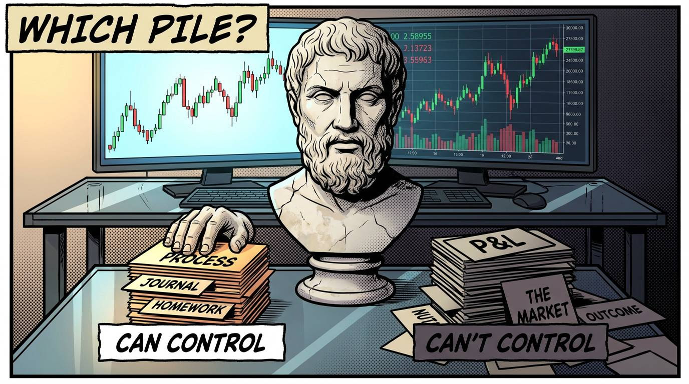
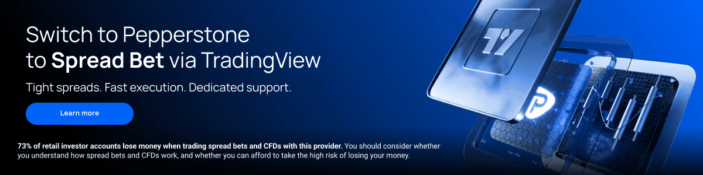

Quick reminder. It's NFP today at 1.30pm UK time. Markets closed tomorrow.
So, there's a line from a Stoic philosopher called Epictetus that is just so perfect for trading...
You may have heard it before, but it doesn't reduce it's impact to remind ourselves...
CONTROL

He said...
"Make the best use of what is in your power, and take the rest as it happens."
Epictetius was an ex-slave who ended up teaching philosophy in Rome. And the whole thing he taught boiled down to this one idea.
Control what you can
Accept what you cannot
Sort everything into those two piles, then stop wasting energy on the wrong pile.
Sort everything into those two piles, then stop wasting energy on the wrong pile.
Now think about what we do as traders...
We worry about where the market's going, we worry about the next trade working, we worry about how much we're going to make this week. We sweat over whether the stop gets filled or the target gets hit.
Yet, we can't control a single one of those.
The market doesn't know or care that we exist... It's going to do what it's going to do.
Our stop fills, or it doesn't.
Our target hits, or it doesn't.
We have zero control over the outcome of an individual trade.
So why are we pouring so much of ourselves into worrying about stuff we have no say over?
It's mad when you actually write it down!
Epictetus would tell us to take all of that, label it "none of my concern," and leave it. Not because it doesn't matter but because we can't touch it.
So what's left?
What's actually in the pile marked "can control"?
Sticking to our process, refining that process, perhaps journaling our thoughts and our executions. Doing the homework needed...
And here's the beautiful thing we often forget...
All that energy we were spending on the stuff we can't control... it gets freed up to work on stuff we CAN control.
The trader who stops staring at the P&L and starts working the process isn't just calmer.
He gets better... because the resources were always there. They were just pointed at the wrong damn pile.
"Make the best use of what's in your power. Take the rest as it comes."
Wise words, wise words.
